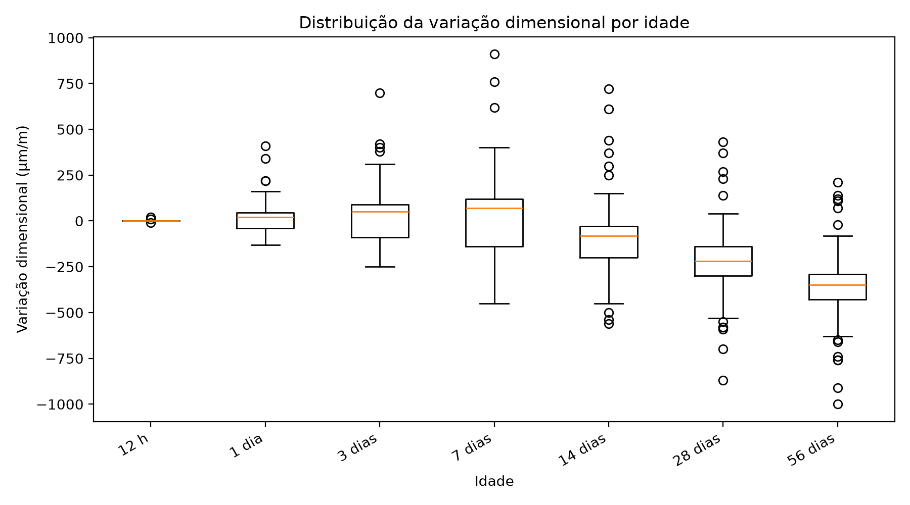

Caracterização da variação dimensional por idade
Caracterizar a distribuição da resposta nas sete idades, preservando o sinal da deformação.
Resultado principal
A base apresenta expansão, retração e estabilidade em diferentes idades. A expansão predomina em 1, 3 e 7 dias; a retração passa a predominar a partir de 14 dias.
Decisão metodológica
Manter ε(t) com sinal como variável principal e tratar o problema como variação dimensional longitudinal.
Evidência tabular
| idade_label | registros | media | mediana | desvio_padrao | minimo | maximo | positivos | negativos | zeros |
|---|---|---|---|---|---|---|---|---|---|
| 12 h | 207 | 0.0966183574879227 | 0.0 | 1.7038899425039815 | -10.0 | 20.0 | 2 | 1 | 204 |
| 1 dia | 207 | 11.594202898550725 | 20.0 | 68.56270296651918 | -130.0 | 410.0 | 118 | 78 | 11 |
| 3 dias | 207 | 19.855072463768117 | 50.0 | 119.7630275900842 | -250.0 | 700.0 | 125 | 82 | 0 |
| 7 dias | 207 | 15.748792270531402 | 70.0 | 177.26699375173322 | -450.0 | 910.0 | 124 | 83 | 0 |
| 14 dias | 207 | -105.7487922705314 | -80.0 | 155.77957630628404 | -560.0 | 720.0 | 25 | 178 | 4 |
| 28 dias | 206 | -224.2233009708738 | -220.0 | 148.64306122230605 | -870.0 | 430.0 | 7 | 199 | 0 |
| 56 dias | 206 | -358.59223300970876 | -350.0 | 145.37574104960242 | -1000.0 | 210.0 | 5 | 201 | 0 |


Rastreabilidade
Este experimento sustenta diretamente a seção 4.1 dos resultados parciais da dissertação.
Relatório detalhado do experimento
Conteúdo incorporado diretamente do relatório Markdown original do Experimento 01, preservando procedimentos, tabelas, resultados, interpretação e conclusão.
1. Caracterização e finalidade
Este experimento inaugura a nova sequência experimental, construída de forma autônoma para avaliar a variação dimensional longitudinal do concreto. A finalidade é caracterizar o comportamento da variável de resposta nas idades de 12 h, 1 dia, 3 dias, 7 dias, 14 dias, 28 dias e 56 dias, preservando o sinal dos valores medidos.
A interpretação adotada é:
- valores negativos indicam retração;
- valores positivos indicam expansão;
- valores iguais a zero indicam estabilidade dimensional.
Esse experimento é essencial porque mostra que a variável de interesse não deve ser tratada apenas como retração. A base contém registros positivos, negativos e nulos, de modo que o termo metodologicamente mais adequado é variação dimensional.
2. Base e variáveis analisadas
A base utilizada é a planilha Análise retração_Guilherme.xlsx, localizada na raiz do projeto. Foram consideradas as colunas de variação dimensional nas sete idades experimentais. Neste experimento ainda não há treinamento de modelo; a análise é descritiva.
3. Procedimento executado
O script carregou a base, padronizou os nomes das colunas, reorganizou as medidas por idade e calculou estatísticas descritivas e contagens de sinais. Também foram gerados gráficos para comparação temporal da média e da distribuição dos valores.
4. Tabelas geradas
Tabela 1 — Estatísticas da variação dimensional por idade
A Tabela 1 resume a variação dimensional em cada idade. Ela apresenta número de registros, média, mediana, desvio-padrão, valores mínimo e máximo, além da quantidade de valores positivos, negativos e iguais a zero. Essa tabela permite observar a transição entre fases com expansão relevante e fases em que a retração passa a predominar.
Arquivo de origem: experimento_01_caracterizacao/resultados/estatisticas_por_idade.csv
| idade_label | registros | media | mediana | desvio_padrao | minimo | maximo | positivos | negativos | zeros |
|---|---|---|---|---|---|---|---|---|---|
| 12 h | 207 | 0.097 | 0 | 1.704 | -10 | 20 | 2 | 1 | 204 |
| 1 dia | 207 | 11.594 | 20 | 68.563 | -130 | 410 | 118 | 78 | 11 |
| 3 dias | 207 | 19.855 | 50 | 119.763 | -250 | 700 | 125 | 82 | 0 |
| 7 dias | 207 | 15.749 | 70 | 177.267 | -450 | 910 | 124 | 83 | 0 |
| 14 dias | 207 | -105.749 | -80 | 155.78 | -560 | 720 | 25 | 178 | 4 |
| 28 dias | 206 | -224.223 | -220 | 148.643 | -870 | 430 | 7 | 199 | 0 |
| 56 dias | 206 | -358.592 | -350 | 145.376 | -1000 | 210 | 5 | 201 | 0 |
Tabela 2 — Contagem dos sinais por idade
A Tabela 2 organiza os dados por classe de sinal: estabilidade, expansão e retração. Ela é importante porque evidencia que as idades iniciais apresentam comportamento misto, enquanto idades mais avançadas concentram maior quantidade de valores negativos.
Arquivo de origem: experimento_01_caracterizacao/resultados/contagem_sinais_por_idade.csv
| idade_label | estabilidade | expansao | retracao |
|---|---|---|---|
| 12 h | 204 | 2 | 1 |
| 1 dia | 11 | 118 | 78 |
| 3 dias | 0 | 125 | 82 |
| 7 dias | 0 | 124 | 83 |
| 14 dias | 4 | 25 | 178 |
| 28 dias | 0 | 7 | 199 |
| 56 dias | 0 | 5 | 201 |
5. Figuras geradas
Figura 1 — Média da variação dimensional por idade
A Figura 1 apresenta a média da variação dimensional em ordem temporal. O gráfico permite visualizar a evolução média do fenômeno ao longo do tempo, evitando interpretação apenas pontual aos 28 dias.
Figura 2 — Distribuição da variação dimensional por idade
A Figura 2 apresenta a dispersão da variação dimensional por idade. O boxplot permite identificar amplitude, assimetria e presença de valores extremos em cada etapa temporal.
6. Interpretação dos resultados
Os resultados confirmam que a resposta experimental varia ao longo do tempo e que o sinal é parte relevante da interpretação física. O experimento mostra que a expansão, a retração e a estabilidade dimensional coexistem na base, especialmente nas idades iniciais.
7. Conclusão do experimento
O Experimento 1 justifica a escolha de epsilon_t como variável de resposta longitudinal com sinal. A partir dele, a sequência experimental passa a tratar a predição como um problema de regressão temporal da variação dimensional, e não como predição isolada de retração absoluta.